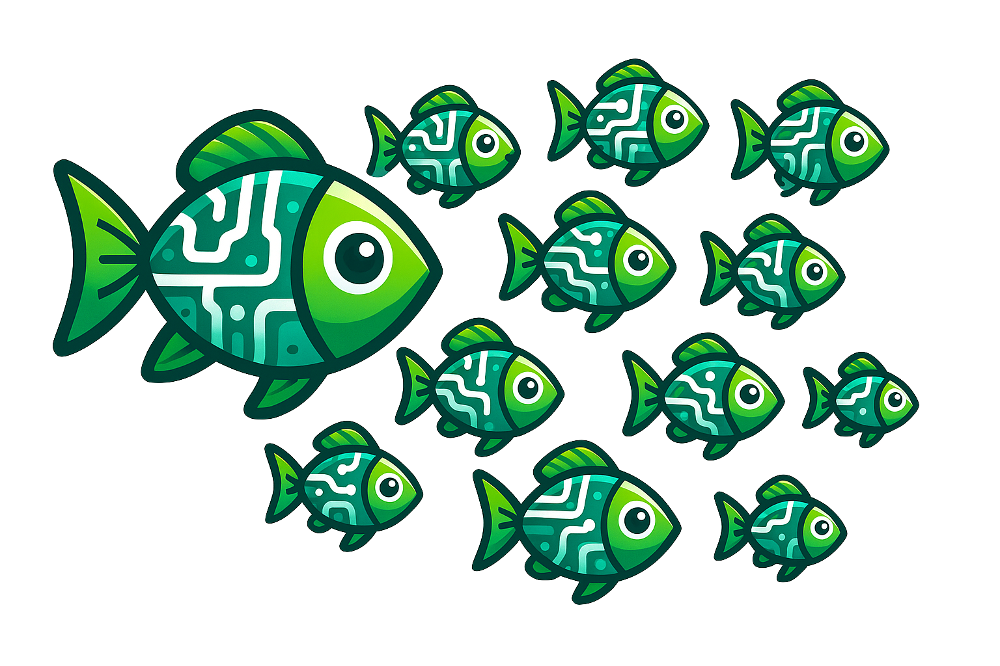

Multi-GPU and Asynchronous Training#
{kind=link}
Multi-GPU Training#
AMAGO can replicate the same (rollout –> learn) loop on multiple GPUs in DistributedDataParallel (DDP) mode. We simplify DDP setup with huggingface/accelerate
To use accelerate, run accelerate config and answer the questions. accelerate is mainly used for distributed LLM training and many of its features don’t apply here. For our purposes, the answer to most questions is “NO”, unless we’re being asked about the GPU count, IDs, or float precision.
Then, to use the GPUs we requested during accelerate config, we’d replace a command that noramlly looks like this:
python my_training_script.py --run_name agi --env CartPole-v1 ...
with:
accelerate launch my_training_script.py --run_name agi --env CartPole-v1 ...
And that’s it! Let’s say our Experiment.parallel_actors=32, Experiment.train_timesteps_per_epoch=1000, Experiment.batch_size=32, and Experiment.batches_per_epoch=500. On a single GPU this means we’re collecting 32 x 1000 = 32k timesteps per epoch, and training on 500 batches each with 32 sequences. If we decided to use 4 GPUs during accelerate config, these same arguments would lead to 4 x 32 x 1000 = 128k timesteps collected per epoch, and we’d still be doing 500 grad updates per epoch with 32 sequences per GPU, but the effective batch size would now be 4 x 32 = 128. Realistically, we’re using multiple GPUs to save memory on long sequences and we’d want to change the batch size to 8 to recover the original batch size of 4 x 8 = 32 while avoiding OOM errors.
Note
Validation metrics (val/ on wandb) average over accelerate processes, but the train/ metrics are only logged from the main process (the lowest GPU index) and would have a sample size of a single GPU’s batch dim.
Asynchronous Training/Rollouts#
Each epoch alternates between rollouts –> gradient updates. AMAGO saves environment data and checkpoints to disk, so changing some Experiment` kwargs would let these two steps be completely separate.
After we create an experiment = Experiment(), but before experiment.start(), switch_async_mode() can override settings to "learn", "collect" or do "both" (the default). This leads to a very hacky but fun way to add extra data collection or do training/learning asychronously. For example, we can accelerate launch a multi-gpu script that only does gradient updates, and collect data for that model to train on with as many collect-only processes as we want. All we need to do is make sure the dset_root, dset_name, run_name are the same (so that all the experiments are working from the same directory), and the network architecture settings are the same (so that checkpoints load correctly). For example:
# my_training_script.py
from argparse import ArgumentParser()
from amago.cli_utils import switch_async_mode, use_config
parser = ArgumentParser()
parser.add_argument("--mode", options=["learn", "collect", "both"])
args = parser.parse_args()
config = {
...
}
use_config(config)
experiment = Experiment(
dset_root="~/amago_dsets",
dset_name="agi_training_data",
run_name="v1",
tstep_encoder_type=FFTstepEncoder,
traj_encoder_type=TformerTrajEncoder,
agent_type=MultiTaskAgent,
...
)
switch_async_mode(experiment, args.mode)
experiment.start()
experiment.learn()
accelerate config a 4-gpu training process on GPU ids 1, 2, 3, 4
Then:
CUDA_VISIBLE_DEVICES=5 python my_training_script.py --mode collect # on a free GPU
accelerate launch my_training_script.py --mode train
And now we’re collecting data on 1 gpu and doing DDP gradient updates on 4 others. At any time during training we could decide to add another --mode collect process to boost our framerate. This all just kinda works because the AMAGO learning update is way-off-policy (Agent) or fully offline (MultiTaskAgent). Of course this could be made less hacky by writing one script that starts the collection process, waits until the replay buffer isn’t empty, then starts the training process. We are working on some very large training runs and you can expect these features to be much easier to use in the future.